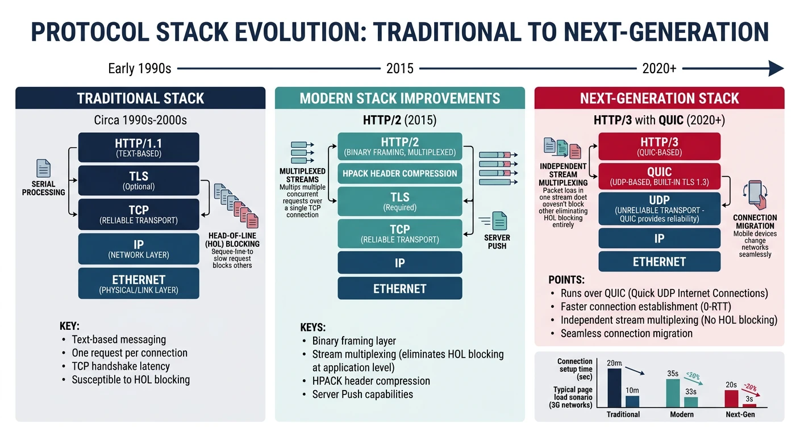
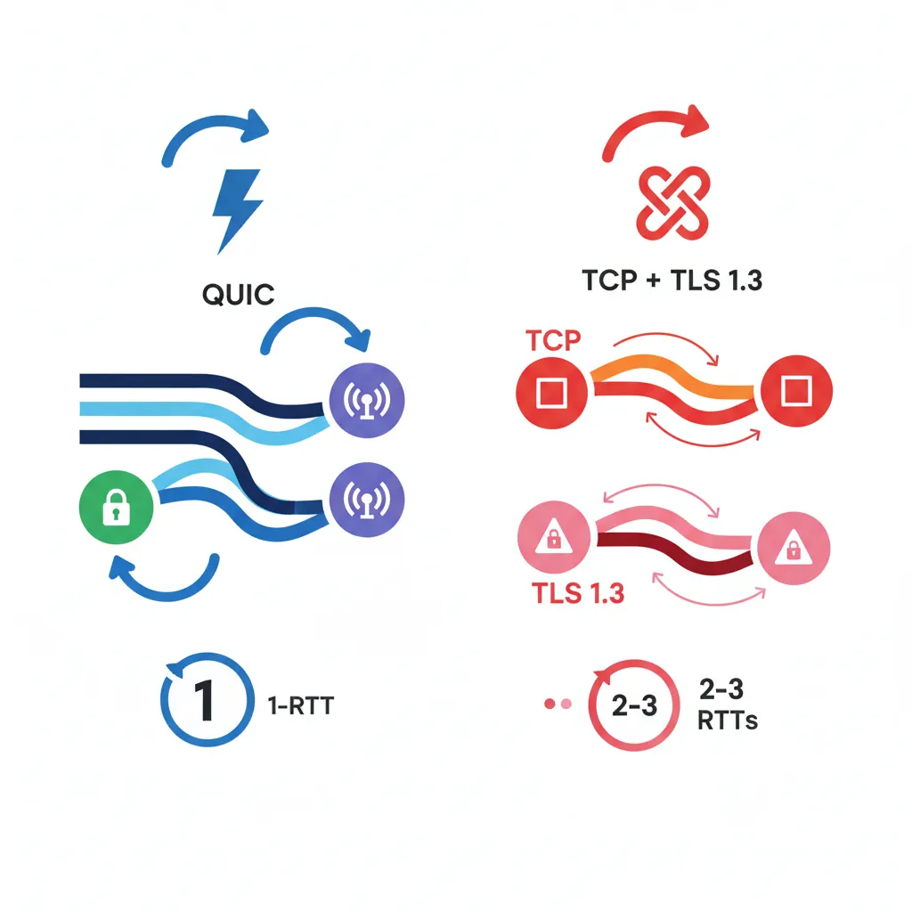

TCP has served us for 40+ years, but its limitations are showing. QUIC is a ground-up redesign of transport—faster connections, no head-of-line blocking, and built-in encryption.

The next generation of internet protocols — QUIC replaces TCP+TLS at the transport layer, enabling HTTP/3 and WebTransport for faster, more resilient connections
Series Context: This is Part 19 of 20 in the Complete Protocols Master series. These protocols are reshaping the transport and application layers.
TCP Limitations:
1. HEAD-OF-LINE BLOCKING
One lost packet blocks ALL streams
HTTP/2 multiplexing limited by TCP
2. SLOW CONNECTION SETUP
TCP: 1 RTT (SYN, SYN-ACK, ACK)
TLS: 1-2 RTT additional
Total: 2-3 RTT before data
3. OSSIFICATION
Middleboxes inspect TCP headers
Hard to deploy new TCP features
4. NO ENCRYPTION BY DEFAULT
TCP metadata visible
Optional TLS adds latency
5. CONNECTION TIED TO IP
Mobile users lose connection on network switch
VPN reconnection issues
QUIC Fixes:
✅ Independent stream multiplexing
✅ 0-RTT connection establishment
✅ Encryption mandatory (metadata too)
✅ Connection migration
✅ UDP-based (bypasses middleboxes)
QUIC Protocol
QUIC (Quick UDP Internet Connections) is a transport protocol built on UDP. Google developed it, and it's now an IETF standard (RFC 9000). Over 25% of internet traffic uses QUIC.

QUIC combines transport and encryption into a single 1-RTT handshake, compared to TCP+TLS 1.3 which requires separate handshakes totaling 2-3 round trips
Key Insight: QUIC isn't "UDP but reliable"—it's a complete transport redesign that happens to use UDP as its substrate.
While QUIC and HTTP/3 speed up the public internet, a parallel revolution is happening inside data centres and supercomputers. Traditional TCP/IP was designed for wide-area networks where packets traverse many hops, but within a data centre rack (or between GPUs on the same board) that overhead is wasteful. A family of technologies has emerged to move data between servers, GPUs, and memory pools with microsecond latency instead of millisecond latency—often bypassing the operating system entirely.
RDMA (Remote Direct Memory Access)
RDMA lets one computer read or write the memory of another computer directly, without involving the remote CPU or operating system. In normal networking, data must travel: Application → OS kernel → NIC → wire → NIC → OS kernel → Application. RDMA eliminates the kernel on both sides—the network adapter (NIC) reads from or writes to application memory in a single operation. This achieves latencies under 2 microseconds and bandwidths exceeding 400 Gbps.
Why RDMA Matters
Every kernel crossing (system call) adds ~1–5 µs of latency and consumes CPU cycles for copying data. For high-frequency trading, distributed databases (like SAP HANA or Oracle RAC), and AI training that exchanges gradients millions of times per second, these microseconds compound into seconds of wasted time. RDMA removes that overhead entirely.
RDMA Operations
Operation
Description
CPU Involvement
RDMA Read
Local NIC reads from remote memory
Remote CPU not notified
RDMA Write
Local NIC writes to remote memory
Remote CPU not notified
Send / Receive
Two-sided message passing
Both CPUs involved
Atomic
Compare-and-swap or fetch-and-add on remote memory
Executed by remote NIC hardware
Key concept: RDMA Read and Write are one-sided—the remote server's CPU never knows it happened. This is what makes RDMA so fast: zero context switches, zero memory copies, zero interrupts on the remote side.
InfiniBand
InfiniBand is a dedicated high-performance network technology purpose-built for RDMA. Unlike Ethernet (which was designed for office LANs and later adapted for data centres), InfiniBand was designed from day one for ultra-low latency, lossless delivery, and direct memory access. It uses its own switches, cables, and host channel adapters (HCAs) instead of standard Ethernet NICs.
InfiniBand Speed Tiers
Generation
Per-Lane Speed
4× Link Speed
Typical Latency
SDR
2.5 Gbps
10 Gbps
~5 µs
FDR
14 Gbps
56 Gbps
~1.3 µs
HDR
25 Gbps
200 Gbps
~0.6 µs
NDR
100 Gbps
400 Gbps
~0.5 µs
XDR (2025)
200 Gbps
800 Gbps
<0.5 µs
Where it's used: HPC clusters (Top500 supercomputers), AI training farms (NVIDIA DGX systems), financial trading platforms, and large-scale storage systems. NVIDIA acquired Mellanox (the dominant InfiniBand vendor) in 2020 for $6.9B, signalling how critical this technology is for AI infrastructure.
RoCE (RDMA over Converged Ethernet)
RoCE (pronounced "rocky") brings RDMA capabilities to standard Ethernet networks, eliminating the need for specialised InfiniBand hardware. This is significant because most data centres already have Ethernet infrastructure—RoCE lets them gain RDMA performance benefits without replacing every switch and cable.
RoCE Versions
Version
Transport
Routable?
Use Case
RoCE v1
Ethernet L2 frames only
No (same subnet)
Single rack / small cluster
RoCE v2
UDP/IP encapsulation
Yes (across subnets)
Data centre–wide RDMA
InfiniBand vs RoCE: When to Choose What
InfiniBand: Best for dedicated HPC/AI clusters where maximum performance matters and you control the entire network (e.g., NVIDIA DGX SuperPOD)
RoCE v2: Best when RDMA is needed over existing Ethernet infrastructure, or when sharing the network with non-RDMA traffic (e.g., Azure cloud instances with RDMA)
Key trade-off: InfiniBand guarantees lossless delivery in hardware; RoCE requires careful Ethernet configuration (PFC, ECN) to avoid packet drops that devastate RDMA performance
DPDK (Data Plane Development Kit)
DPDK takes a different approach to high-speed networking. Instead of hardware-level RDMA, DPDK is a software framework that bypasses the Linux kernel's networking stack entirely. It gives user-space applications direct access to the NIC hardware via poll-mode drivers, eliminating interrupts and context switches. Originally developed by Intel, DPDK is now the foundation for software-defined networking equipment, virtual switches, and telecom infrastructure.
How DPDK Bypasses the Kernel
Traditional packet path (Linux kernel):
NIC → IRQ → Kernel driver → sk_buff alloc → TCP/IP stack
→ socket buffer → copy to user space → Application
⏱ Overhead: ~10-20 µs per packet, CPU-intensive
DPDK packet path (kernel bypass):
NIC → DMA to user-space hugepage memory → Poll-mode driver
→ Application processes packet directly
⏱ Overhead: ~1-2 µs per packet, line-rate processing
Key DPDK techniques:
• Poll Mode Drivers (PMD) — no interrupts, CPU polls NIC
• Hugepages (2 MB / 1 GB) — reduced TLB misses
• Lockless ring buffers — zero-copy between cores
• CPU affinity — pin threads to cores, no scheduling jitter
• Batch processing — handle 32+ packets per function call
Where it's used: Software routers (VPP/FD.io), virtual switches (Open vSwitch with DPDK), 5G user-plane (UPF), NFV appliances, packet capture tools, and cloud provider network infrastructure. DPDK can process 100+ million packets per second on a single server.
DSM (Distributed Shared Memory)
Distributed Shared Memory creates the illusion that multiple machines share a single, unified memory space—even though physically each machine has its own local RAM. Applications can read and write to any address as if it were local memory, and the DSM system transparently handles fetching data from remote machines. This simplifies programming dramatically: instead of writing explicit network send/receive code, developers use familiar pointers and memory operations.
How DSM Works
Physical reality:
Machine A: [RAM 0x0000 - 0x3FFF] (local)
Machine B: [RAM 0x0000 - 0x3FFF] (local)
DSM virtual view (what the application sees):
Unified address space: [0x0000 - 0x7FFF]
• Address 0x1000 → Machine A's local RAM ⚡ fast
• Address 0x5000 → Machine B's RAM 📡 fetched via network
Consistency models:
• Sequential — all nodes see same order (slow, simple)
• Release — sync only at lock/unlock points (fast, complex)
• Lazy release — defer sync until data actually needed (fastest)
DSM in Practice
Pure software DSM (like Treadmarks or Grappa) suffered from high latency over traditional networks. Modern DSM revival is driven by RDMA and CXL: RDMA-based DSM systems (like FaRM from Microsoft Research) achieve single-digit microsecond remote reads, and CXL 3.0's hardware-coherent shared memory makes DSM practical at rack scale. Today, DSM concepts underpin disaggregated memory architectures in hyperscale data centres.
CXL (Compute Express Link)
CXL is an open industry standard built on PCIe physical layer that enables cache-coherent communication between CPUs, accelerators (GPUs, FPGAs), and memory devices. Think of it as giving devices a shared, coherent view of memory—the CPU and a GPU can both read and write the same memory region with automatic hardware cache synchronisation, eliminating the need for explicit data copies between host and device memory.
CXL Protocol Types
Sub-Protocol
Purpose
Example Use
CXL.io
Standard PCIe I/O (discovery, config, DMA)
Device enumeration, driver communication
CXL.cache
Device caches host memory with coherency
GPU/FPGA accelerator caches hot data from host RAM
CXL.mem
Host accesses device-attached memory
Memory expander adds 512 GB to server via CXL DIMM
CXL Versions & Capabilities
Version
PCIe Base
Key Addition
CXL 1.1
PCIe 5.0
Single host ↔ single device coherency
CXL 2.0
PCIe 5.0
CXL switches — multiple hosts share a memory pool
CXL 3.0
PCIe 6.0
Multi-level switching, hardware-coherent shared memory across racks, peer-to-peer
Impact: CXL enables "memory disaggregation"—instead of buying servers with fixed RAM, data centres can add memory independently as CXL-attached pools. A server that needs 2 TB of RAM for a brief analytics job can dynamically allocate CXL memory from a shared pool, then release it for other workloads. Intel, AMD, ARM, Samsung, and Microsoft are all shipping CXL products.
NVLink
NVLink is NVIDIA's proprietary high-bandwidth interconnect designed specifically for GPU-to-GPU and GPU-to-CPU communication. Standard PCIe bottlenecks multi-GPU AI training because gradient synchronisation requires terabytes of data to flow between GPUs every second. NVLink solves this with a dedicated, high-bandwidth, cache-coherent link that makes multiple GPUs behave almost like a single, larger GPU.
NVLink Evolution
Generation
GPU Architecture
Bandwidth (per GPU)
Notable Feature
NVLink 1.0
Pascal (P100)
160 GB/s
First GPU-to-GPU high-speed link
NVLink 2.0
Volta (V100)
300 GB/s
CPU-GPU coherency (IBM POWER9)
NVLink 3.0
Ampere (A100)
600 GB/s
NVSwitch for all-to-all topology
NVLink 4.0
Hopper (H100)
900 GB/s
NVLink Switch — 256 GPUs fully connected
NVLink 5.0
Blackwell (B200)
1,800 GB/s
NVLink-C2C chip-to-chip, 576 GPUs
NVLink vs PCIe: The Bandwidth Gap
PCIe 5.0 x16 delivers ~64 GB/s per direction. NVLink 4.0 delivers 900 GB/s—over 14× more bandwidth. For large language model training where 8 GPUs must synchronise billions of parameters every iteration, this difference means the network is no longer the bottleneck. NVSwitch extends this further: instead of each GPU connecting to a few neighbours, a dedicated NVLink switch fabric provides full bisection bandwidth so every GPU can talk to every other GPU at full speed simultaneously.
Interconnect Comparison Summary
Technology
Type
Max Bandwidth
Latency
Primary Use
Ethernet (100G)
Network
100 Gbps
~10-50 µs
General data centre networking
RoCE v2
Network (RDMA)
400 Gbps
~2-5 µs
RDMA over existing Ethernet
InfiniBand NDR
Network (RDMA)
400 Gbps
~0.5 µs
HPC, AI training clusters
DPDK
Software framework
Line-rate
~1-2 µs
Software routers, NFV, 5G
CXL 3.0
CPU-device link
64 GB/s (PCIe 6.0)
~100-300 ns
Memory pooling, accelerators
NVLink 4.0
GPU-GPU link
900 GB/s
~50 ns
Multi-GPU AI training
DSM
Programming model
Depends on transport
Varies
Shared memory illusion across nodes
Summary & Next Steps
Key Takeaways:
QUIC: New transport on UDP, replaces TCP+TLS
HTTP/3: HTTP over QUIC, no HOL blocking
0-RTT: Immediate data on resumed connections
WebTransport: Low-latency bidirectional streams
Connection migration: Seamless network switching
Quiz
Test Your Knowledge
QUIC transport layer? (UDP)
HTTP/3 solves what TCP problem? (Head-of-line blocking)
0-RTT tradeoff? (Replay attack risk)
WebTransport vs WebSocket? (Unreliable delivery, multiple streams)